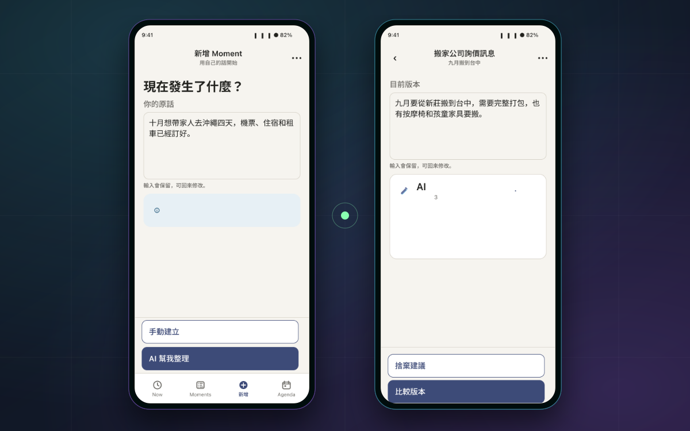
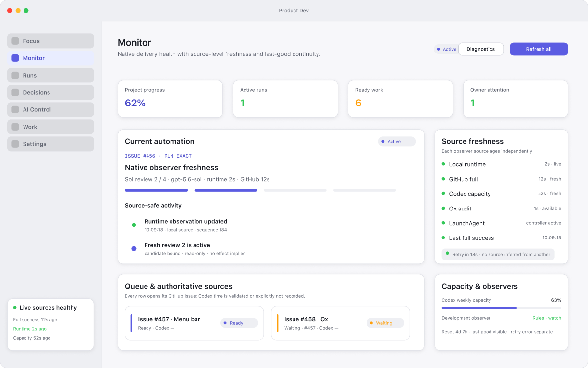
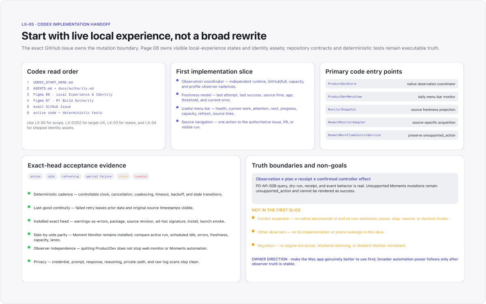

Intent → contract
Natural language becomes an editable, bounded structure — never an opaque command.
Senior iOS Engineer · Taiwan
10+ years shipping production iOS products. Now using AI-assisted development to build products with clear validation, user control, and recovery.
AI, STRUCTURALLY
The interface can feel fluid. Underneath, authority, truth, recovery, and evidence stay explicit.
Natural language becomes an editable, bounded structure — never an opaque command.
Validation, rendering, persistence, and recovery remain deterministic product responsibilities.
The user can inspect state, understand the next action, and stop unsafe mutations.
Receipts, checks, and recovery paths matter more than an agent merely appearing busy.
SELECTED SYSTEMS
From a life intent to one truthful next action.
Moment is a React Native, Expo, and TypeScript product that turns natural-language intent into understandable, editable preparation. AI suggestions stay separate from saved data so user-approved plans remain recoverable and confirmed results stay distinct from unverified suggestions.

ORIGINAL FIGMA ↗A workbench for automation you can actually trust.
ProductDev observes and safely manages repository automation without taking control from the existing scheduler. GitHub Issues remain the work contract; changes are guarded, previews match the real action, and every supported action leaves a permanent record.

FIGMA SOURCEThe tooling behind long-running AI work.
A family of open tools turns fragile agent sessions into reviewable engineering: Context Handoff preserves acceptance criteria across fresh threads, Task ETA Tracker forecasts from observable milestones, and Moment Monitor exposes live state without gaining mutation authority.

FIGMA SOURCESHIPPED AT SCALE
My AI-assisted product work is grounded in a decade of shipping products where state, latency, and correctness already mattered.

Owned iOS Earn across multiple blockchain protocols. Shipped staking, rewards, position management, and Buy & Swap for a self-custodial wallet.

Built live odds, open bets, and betting-history synchronization. Prevented duplicated WebSocket updates across multiple betting slips and evolved legacy modules.

Delivered vehicle usage tracking, vehicle status, and in-app guidance for a connected vehicle application on a focused three-month production cycle.
HOW I BUILD
Name the user problem, observable done condition, and what the product must never claim.
Let models interpret and propose; keep validation, persistence, and mutations behind explicit contracts.
Treat checkpoints, stale writes, degraded modes, and receipts as product surfaces — not backend trivia.
Prototype the interaction, test deterministic gates, then measure whether the system helps the user move.
BUILD THE NEXT SYSTEM